입주청소
새집에서의 첫날을 산뜻하게.
신축·리모델링 후 비어 있는 집의
먼지와 분진을 청소합니다.
평당 13,000원 최소 200,000원
공간에 온기를, 일상에 깨끗함을
짐을 들이기 전에도,
일상을 새로 정리하고 싶을 때도.
우리 집에 맞는 청소를 온결클린과 함께.
간단한 조건 입력으로 확인하는 예상 청소비
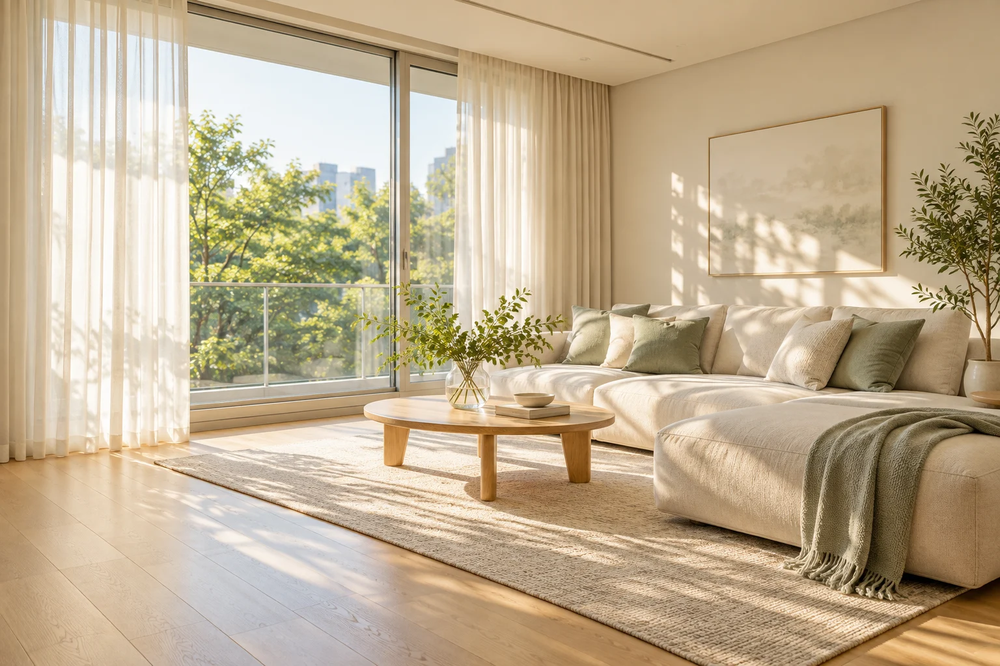
OUR SERVICES
공간의 상태와 필요한 청소 범위를 먼저 확인하고,
우리 집에 맞는 청소를 안내합니다.
새집에서의 첫날을 산뜻하게.
신축·리모델링 후 비어 있는 집의
먼지와 분진을 청소합니다.
이전의 흔적을 덜어내고 새롭게.
이전 거주자가 나간 빈집의
생활 오염을 청소합니다.
익숙한 집에 새로운 여유를.
가구와 짐이 있는 상태에서
생활공간을 청소합니다.
공급면적 기준 · 모든 금액 부가세 포함 · 서비스 지역 내 출장비 포함
CLEANING CHECKLIST
기본 범위를 미리 확인하세요.
현장 상태에 따른 세부 범위는 상담 후 안내합니다.
접근 가능한 바닥과 창틀,
내부가 비어 있는 수납장
조리대·싱크대 등 주방 표면,
내부가 비어 있는 수납장
접근 가능한 바닥과 욕실 표면,
세면대·변기 등 기본 청소
현관과 베란다의 접근 가능한
바닥 및 표면 청소
YOUR CLEANING ESTIMATE
필요한 항목만 선택하면 예상 금액이 보여요.
이름이나 전화번호 없이 체험할 수 있습니다.
계산 기준: 면적 × 유형별 단가와 최소 기본 청소비 중 큰 금액 + 추가 공간 및 선택 서비스 비용
기본 청소비는 1,000원 단위 올림 · ㎡ ÷ 3.3058로 환산 후 소수점 첫째 자리 반올림 · 날짜·요일 할증 없음
CLEAN IN EVERY DETAIL
물자국부터 틈새 먼지까지, 같은 부분을 가까이.
6곳의 클로즈업 전후 사진을 차례로 살펴보세요.
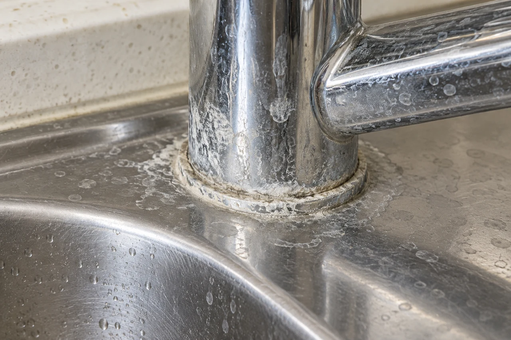
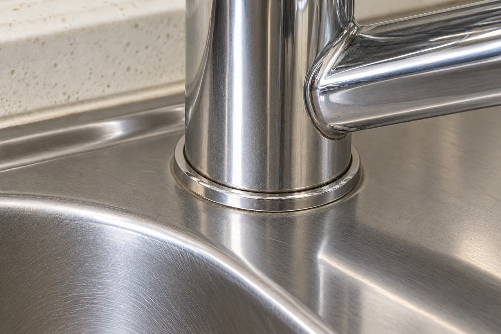
수전 바닥과 싱크대 테두리에 남은 물자국과 표면 침착물을 가까이 비교해보세요.
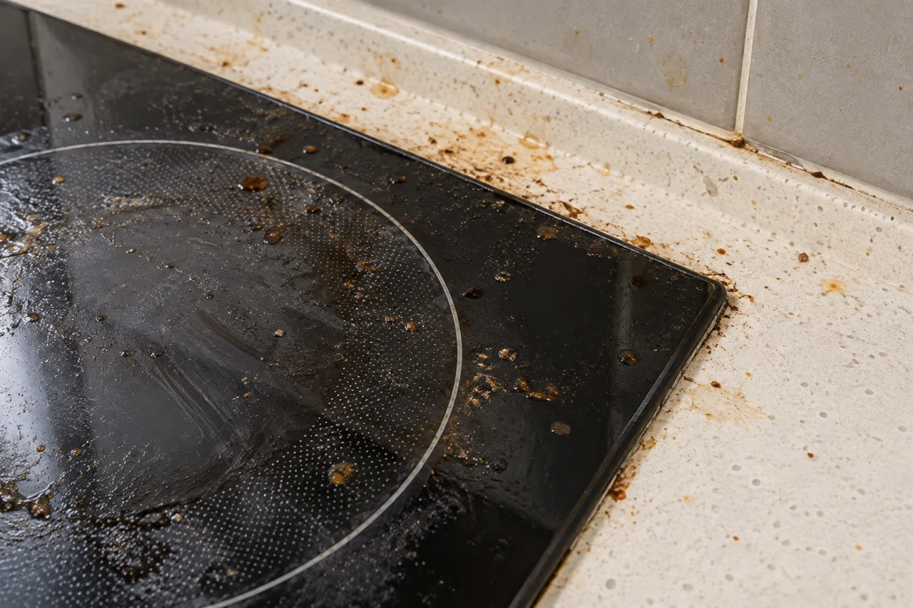
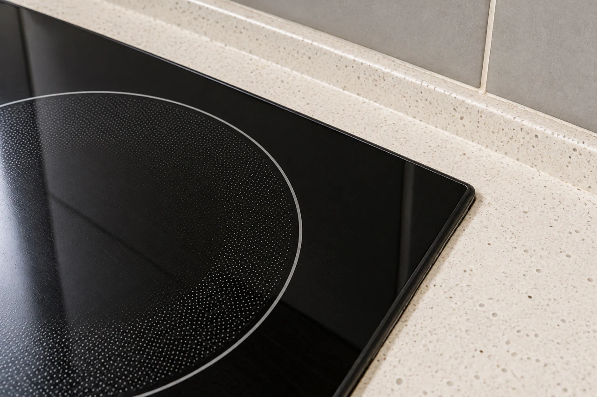
검은 상판 위에 번진 기름때와 조리대 틈새의 잔여물이 어떻게 달라지는지 살펴보세요.
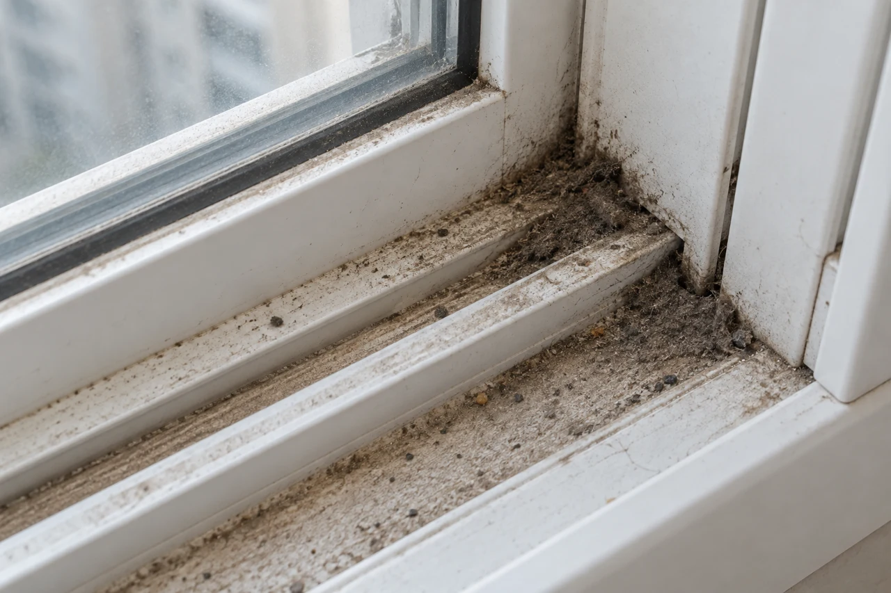
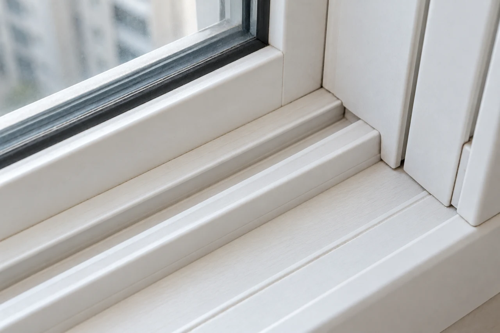
레일 안쪽과 모서리에 모인 먼지, 좁은 홈의 변화를 확인해보세요.
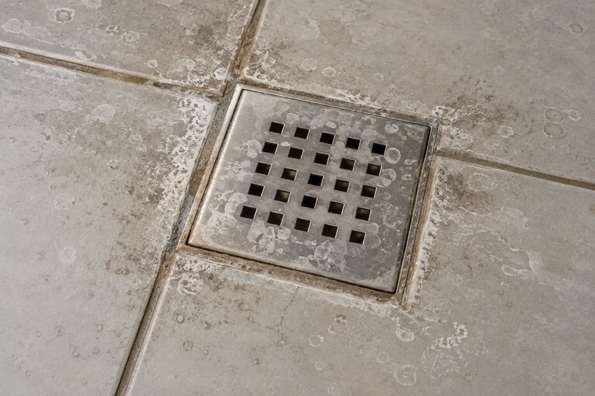
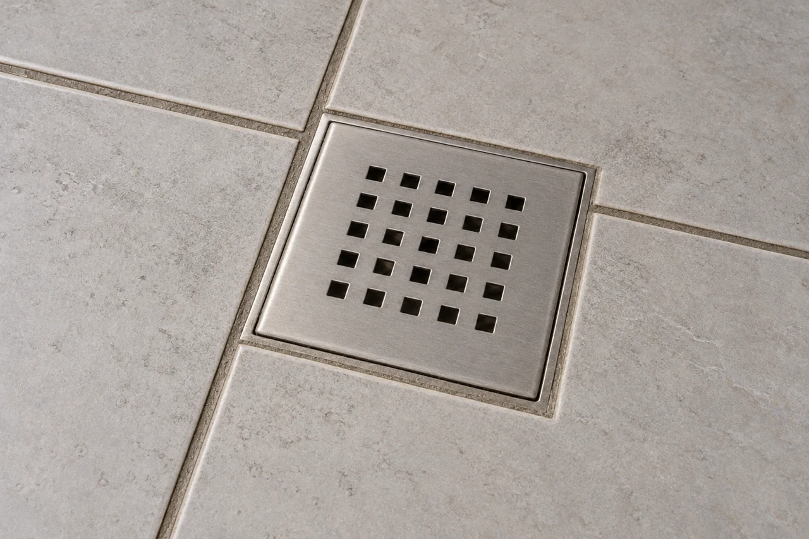
바닥 표면의 비누 잔여물과 물자국, 배수구 테두리를 같은 구도로 비교합니다.
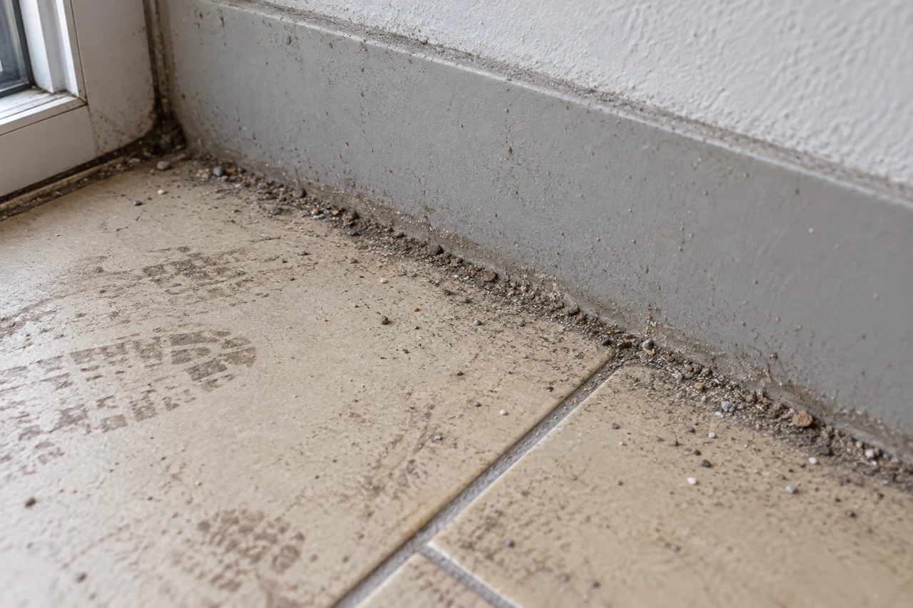
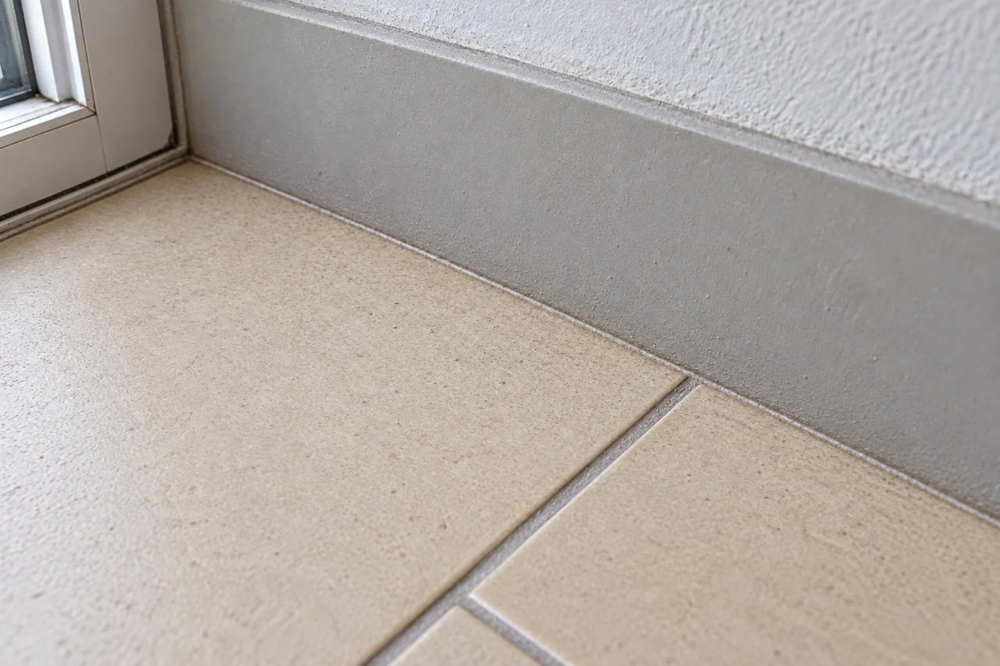
바닥의 먼지와 발자국, 벽면을 따라 쌓인 잔여물을 부분별로 살펴보세요.
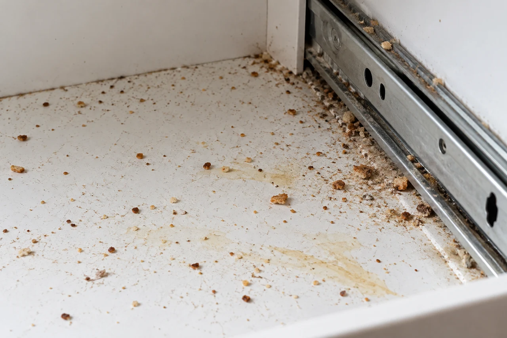
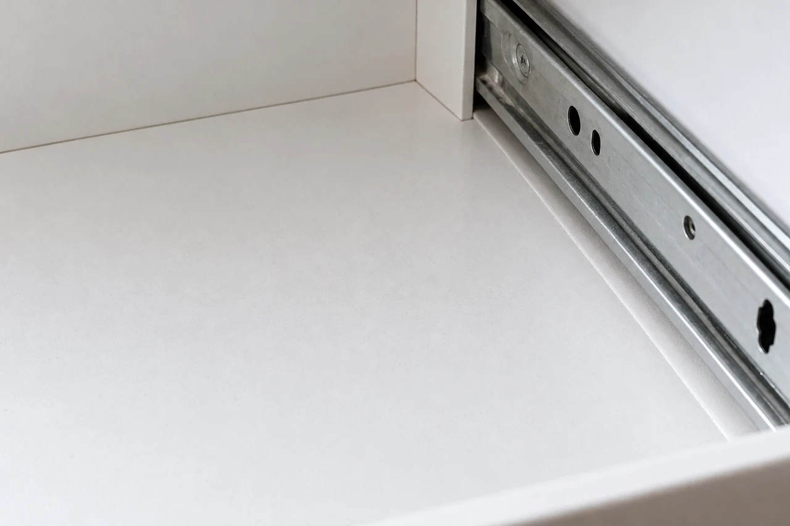
내부를 비운 수납장의 부스러기와 레일 주변 먼지를 가까이 확인해보세요.
모든 전후 사진은 청소 범위의 이해를 돕기 위해 만든 AI 시연 이미지입니다. 실제 작업 결과를 보장하지 않으며, 현장 상태와 작업 범위에 따라 결과는 달라질 수 있습니다. 전문 곰팡이 제거 등 특수 오염은 별도 상담이 필요합니다.
HOW IT WORKS
우리 집에 필요한
청소 조건을 선택해요.
현장 상태와 범위를
확인하고 안내해요.
상담 후 가능한
작업 일정을 조율해요.
확정된 범위에 맞춰
공간을 청소해요.
작업한 공간을
함께 확인해요.
위 과정은 가상 업체의 서비스 안내입니다. 이 홈페이지에서는 실제 상담이나 예약이 접수되지 않습니다.
GOOD TO KNOW
자주 궁금해하시는 내용을 모았어요.
계약서·분양 안내 등에 표시된 공급면적을 입력해주세요. 전용면적이 아닌 공급면적 기준입니다. ㎡를 선택하면 3.3058로 나눈 후 소수점 첫째 자리로 반올림해 계산합니다. 자동 견적 범위는 5~60평입니다.
입력 조건을 기준으로 한 예상 금액입니다. 실제 면적, 현장 상태, 청소 범위를 확인한 후 최종 견적을 안내합니다. 스티커·접착제, 특수 오염 등은 추가 비용이 포함되지 않습니다. 모든 표시 금액은 부가세 포함입니다.
욕실과 베란다는 각각 1개가 기본 청소비에 포함됩니다. 0개를 선택해도 금액은 차감되지 않습니다. 각각 추가 1개당 욕실은 20,000원, 베란다는 15,000원입니다.
입주·이사청소는 비어 있는 집을 기준으로 합니다. 기본 범위에 포함된 수납장과 선택한 붙박이장, 냉장고는 내부를 비워주세요. 거주청소는 가구와 짐의 배치에 따라 접근 가능한 범위를 상담으로 확인합니다.
아니요. 날짜는 상담용 희망일이며 예약 가능 여부를 나타내지 않습니다. 실제 서비스에서는 상담과 최종 견적 확인 후 일정을 확정합니다. 이 포트폴리오에서는 실제 예약·결제·상담 접수를 진행하지 않습니다.
서울 전 지역과 경기 성남·하남·구리·남양주가 설정된 서비스 지역이며, 해당 지역 내 출장비는 기본 금액에 포함됩니다. 기타 지역은 서비스 가능 여부를 별도로 상담합니다. 날짜·요일에 따른 할증은 적용하지 않습니다.
가상 업체의 상담 시간은 월~토 09:00~18:00입니다. 작업 시간은 공간과 작업 조건에 따라 상담 후 안내합니다. 이 사이트의 상담 버튼은 조건을 확인하는 시연 창으로 연결되며, 실제 상담은 접수되지 않습니다.
LET'S MAKE A FRESH START
상담 안내 월~토 09:00~18:00
작업 시간은 작업 조건에 따라 상담 후 안내
개인정보 입력 없이 선택 조건을 확인해보세요.
실제 상담은 접수되지 않습니다.